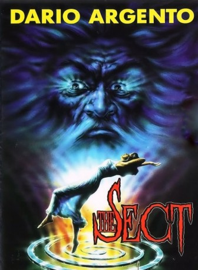

#9911 The Sect
 
 IMDB-Wertung: 6.3 / 10
IMDB-Wertung: 6.3 / 10  Metascore: 0
Metascore: 0 
Seitdem die junge Lehrerin Miriam nach einem Autounfall einen geheimnisvollen alten Mann in ihr Haus aufgenommen hat, der kurz darauf stirbt, geschieht nur noch Schreckliches und Unfaßbares in ihrer Umgebung. Männer, die bisher ein normales Leben führten, werden plötzlich zu Mördern, zu wilden Bestien. Ein mysteriöses, weißes Tuch läßt jeden, der es berührt, verrückt werden. Unbekannte Insekten tauchen auf und dringen in menschliche Ge-hirne ein. Ein Netz aus Horror, Blut und Todesangst zieht sich immer dichter um Miriam. Welches Geheimnis birgt der tiefe Brunnenschacht in ihrem Keller?
Jahr: 1991
Dauer: 116 Minuten
FSK: 18
Land: Italien Studio: Koch MediaTonspuren: DD2.0 - ,
Untertitel: Deutsch,
Auflösung: 1080p (1920x1040) Größe: 7833 MB
Genre: Horror
Regisseur: Michele Soavi
Drehbuch: Dario Argento, Gianni Romoli, Michele Soavi
Soundtrack: Pino Donaggio
Darsteller:
- Kelly Curtis als Miriam Kreisl
 Herbert Lom als Moebius Kelly
Herbert Lom als Moebius Kelly- Mariangela Giordano als Kathryn
- Giovanni Lombardo Radice als Martin Romero
 Tomas Arana als Damon
Tomas Arana als Damon Donald O'Brien als Justice Jonathan Ford
Donald O'Brien als Justice Jonathan Ford Richard Sammel als Truck Driver
Richard Sammel als Truck Driver Daria Nicolodi als
Daria Nicolodi als  Michele Soavi als Magician on TV (uncredited)
Michele Soavi als Magician on TV (uncredited)- Michel Adatte als Frank
- Carla Cassola als Dr. Pernath
- Angelika Maria Boeck als Claire Henri
- Niels Gullov als Mr. Henri
- Yasmine Ussani als Samantha
- Dario Casalini als Mark
- Paolo Pranzo als Steven
- Ralph Bola Mustapha als Second Truck Driver
- Erika Sinisi als Sara
- Fabio Saccani als Pickpocket
- Vincent Regina als Male nurse
- Giovanna Rotellini als First midwife
- Chiara Mancori als Second midwife
- Carmela Pilato als Woman of the sect
Datei: X:\FSK18-1900-1999\Sect, The (1991, FSK18, 1920x1040).mkv seit 08.11.2018
Festplatte: FSK18
 Es gibt insgesamt 108 Filme in der Gruppe 'FSK18-1900-1999'
Es gibt insgesamt 108 Filme in der Gruppe 'FSK18-1900-1999'